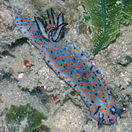
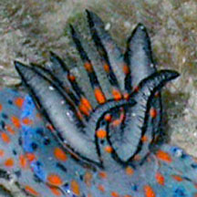
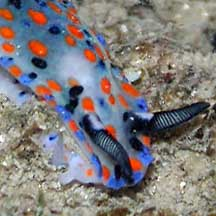
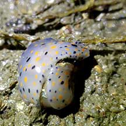
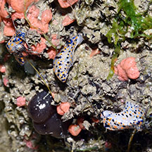
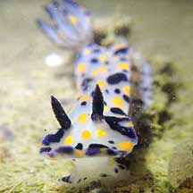
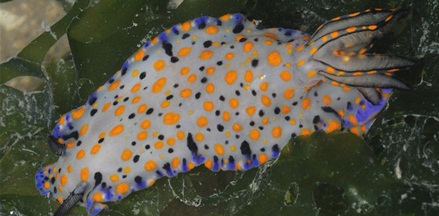
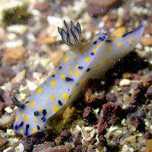
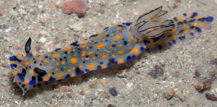

|
|
| nudibranchs text index | photo index |
| Phylum Mollusca > Class Gastropoda > sea slugs > Order Nudibranchia > Genus Hypselodoris |
| Kanga
hypselodoris nudibranch Hypselodoris kanga Family Chromodorididae updated May 2020 Where seen? This small colourful nudibranchs is sometimes seen on our Northern shores. On coral rubble and rocky shores with sponges and encrusting animals. Features: 2-3cm. Body long, narrow with a long tail. A bluish background with short dark blue lines and yellow or orange spots. Large flower-like gills on the back and large rhinophores (relative to the body size). The gills have a triangular cross-section edged in blue with a series of yellow spots up the outer face. See also Dr Bill Rudman's comments on this nudibranch. |
 Chek Jawa, Jul 02 |
 |
 |
 Mating? Changi Loyang, May 21 Photo shared by Jianlin Liu on facebook. |
 Chek Jawa, Aug 20 Photo shared by Loh Kok Sheng on facebook. |
| Kanga hypselodoris nudibranchs on Singapore shores |
On wildsingapore
flickr
|
| Other sightings on Singapore shores |
 Pasir Ris Park, Jan 21 Photo by Jianlin LIu on facebook. |
 Beting Bronok, May 09 Photo shared by Toh Chay Hoon on flickr |
 Beting Bronok, Jun 25 Photo by Jianlin Liu on facebook. |
 Beting Bronok, Jun 17 Photo shared by Marcus Ng on flickr. |
Links
|